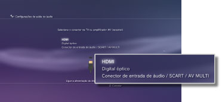
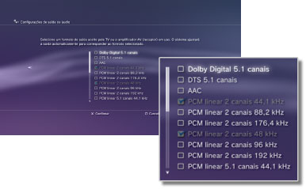
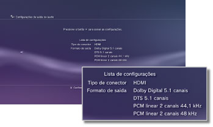

Configurações > Configurações de som > Configurações de saída de áudio
Configurações de saída de áudio
Ajusta as configurações de saída de áudio do sistema. Estas configurações serão utilizadas principalmente quando o sistema estiver conectado aos dispositivos de áudio compatíveis com saída de áudio digital, como amplificadores (receptores) AV para sistemas de entretenimento caseiro.
1. |
Confirme os formatos compatíveis com seu dispositivo de áudio. |
||||||||||||
|---|---|---|---|---|---|---|---|---|---|---|---|---|---|
2. |
Selecione |
||||||||||||
3. |
Selecione [Configurações de saída de áudio]. |
||||||||||||
4. |
Selecione o conector de entrada no dispositivo de áudio. O número de canais e formatos de áudio compatíveis variam dependendo do conector em uso. 
|
||||||||||||
5. |
Selecione os formatos de saída de áudio.  |
||||||||||||
6. |
Verifique suas configurações.  |
||||||||||||
7. |
Salve suas configurações. |
 .
.Dicas
- Áudio [PCM linear 2 canais] é definido como o padrão de saída para todos os conectores de saída. Se alterar as configurações de saída de áudio, o áudio será reproduzido apenas pelos conectores que houverem sido definidos.
- Se você alterar as configurações de saída de áudio, o sistema não será mais capaz de reproduzir áudio por múltiplos conectores de saída ao mesmo tempo. Por exemplo, se seu sistema estiver conectado à TV por um cabo HDMI e a um dispositivo de áudio por um cabo óptico digital e você alterar para [Digital óptico] em [Configurações de saída de áudio], o áudio não será mais reproduzido pela TV. Para reproduzir o áudio pela TV, altere a configuração para [HDMI] ou selecione
 (Configurações) >
(Configurações) >  (Configurações de som) > [Várias saídas de áudio] e selecione a opção como [Ativado].
(Configurações de som) > [Várias saídas de áudio] e selecione a opção como [Ativado]. - Se selecionar [PCM linear 2 canais 88,2 kHz] ou [PCM linear 2 canais 176,4 kHz] na etapa 5, o som pode ficar intermitente ou pode não ser emitido em alguns dispositivos de áudio.
- Quando utilizar um cabo HDMI, apenas o áudio [PCM linear 2 canais] será reproduzido do software de formato PlayStation®2 e PlayStation®. Para reproduzir áudio Dolby Digital ou DTS®, você deve conectar o sistema PS3™ e o dispositivo de áudio utilizando um cabo óptico digital e alterar para [Digital óptico] em [Configurações de saída de áudio].
- Se um dispositivo incompatível com o padrão HDCP (High-bandwidth Digital Content Protection) for conectado ao sistema utilizando um cabo HDMI, o vídeo e/ou áudio não poderá ser reproduzido pelo sistema.
- Se Dolby TrueHD for selecionado como formato de saída de áudio, o áudio será reproduzido em Dolby Digital enquanto o conteúdo Blu-ray 3D™ estiver sendo reproduzido.
Avisos
- Alguns títulos de software de formato PlayStation®2 ou PlayStation® podem apresentar desempenhos diferentes no sistema PS3™ em comparação com os sistemas PlayStation®2 ou PlayStation®, ou podem não apresentar um desempenho adequado no sistema PS3™.
- Além disso, discos no formato PlayStation®2 não podem ser reproduzidos em alguns sistemas PS3™. Para obter detalhes, consulte [Tipos de discos reproduzíveis], visite o site da SIE de sua região ou leia a documentação incluída com seu sistema PS3™.